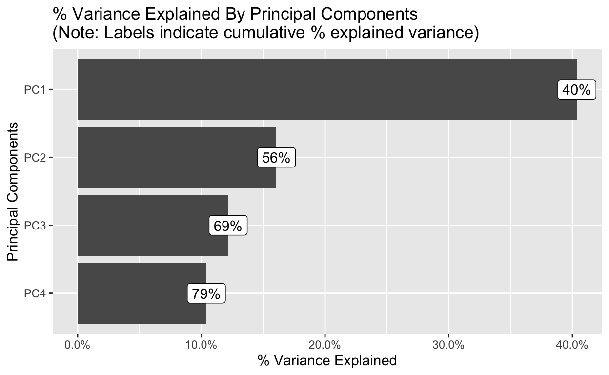
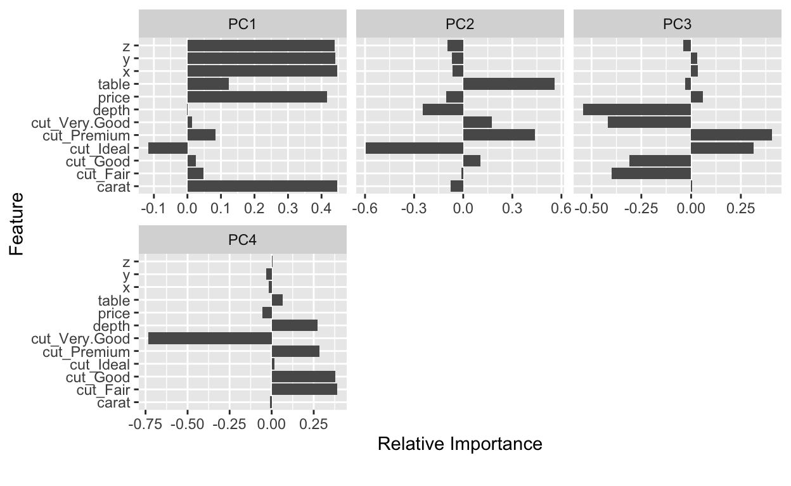

# install.packages("tidyverse")
# install.packages("DataExplorer")
# install.packages("datasets")
library(tidyverse) # for data wrangling and visualization
library(DataExplorer) # for exploratory data analysis
library(datasets) # for getting the data
R demo (ca. 9 min) about DataExplorer package
Automated EDA: visualise everything with only one function!
create_report() function will produce, save and open an HTML document in your web-browser with visualization of all your data in seconds! Moreover, we can determine a single most important variable in our dataset and let the report display the data in the light of this variable. Just run create_report() function with two different datasets, as shown below and see the difference for yourself.
airquality <- datasets::airquality %>%
mutate(Month = factor(Month))
create_report(airquality)
create_report(diamonds, y = "price")
Every report consists of several parts and always starts with “Table of contents”.
Table of contents

Table of contents shows what exactly the exploratory analysis visualized. Namely, it first generally describes the dataset with raw numbers and percentages, then visualizes missing values and every single (univariate) numeric or categorical variable, while checking the distribution of numeric variables with histograms and Quantile-Quantile plots. The report then explores multiple variables simultaneously by displaying correlation between then and conducting a principal component analyses. It finishes with box and scatter plots, which I find especially informative.
Not bad for a single function, if you ask me ;)
But, should we then always produced the whole report? Of coarse not. Conveniently, every part of the report can be produced separately, which not only allows you to explore every aspect of our data even deeper than in the big report, but also gives you the opportunity to adjust the appearance of plots as you wish. Let’s have a look at this!
Big Picture of your data
Below we can see the basic overview of diamonds data in absolute numbers. First, we see the number of rows and columns (variables). Then we see how many numeric and categorical variables do we have in our dataset and whether there are missing values or even missing columns.
 Such quick introduction into our dataset can be reached by the function introduce() for absolute numbers (“t” simply transposes the result) or by the plot_intro() for percentages.
Such quick introduction into our dataset can be reached by the function introduce() for absolute numbers (“t” simply transposes the result) or by the plot_intro() for percentages.
[,1]
rows 53940
columns 10
discrete_columns 3
continuous_columns 7
all_missing_columns 0
total_missing_values 0
complete_rows 53940
total_observations 539400
memory_usage 3457760plot_intro(airquality)

View missing value distribution
One of the most useful functions from DataExplorer package, which I use almost daily is plot_missing(). It not only shows - how many percent of data is missing in every columns, but also explains what the amount of missing values means for us, namely that missing around 25% of data is still kind of OK and we can continue working. This legend helps me to better communicate with my collaborators, which often want me to continue analysis, even when I tell them there is not enough data in some columns. Yes, :) some people prefer to believe statistical software then a human being. Besides, it helps to quickly identify variables with missing values, if some models refuse to run because missing values are present.
Moreover, all plots in DataExplorer can be pimped with the syntax from ggplot2 package:
# pimp your plot with ggplot2
plot_missing(airquality, ggtheme = theme_minimal())

Visualise distribution of categorical (discrete) variables
The best way to visualize categorical variables are bar-plots. And a simple plot_bar() function visualizes all categorical variables from our dataset at once. It even sorts the categories for us putting the most frequent categories on the top. It’s very useful to see how many data-points every category has and usually, in my job, I see way too many small categories which are then supposed to be thrown together. By the way DataExplorer package can do this too, and easily, but more about this later. Until then, we can go one step further as compared to the create_report() function and display the frequency distribution of our categorical variable by any other variable, be it numeric (e.g. price) or discrete (e.g. cut). So, the long time of using table() function to count categorical variables is over for me :)
plot_bar(diamonds)

## View frequency distribution by a numeric variable
plot_bar(diamonds, with = "price", ggtheme = theme_classic())

## View frequency distribution by a discrete variable
plot_bar(diamonds, by = "cut", ggtheme = theme_bw())

Visualize correlation
One of the most powerful tools to summarize a large dataset and to identify patterns and connections between variables is a correlation matrix. A correlation matrix is simply a cross table with correlation coefficients between all combinations of variables pairwisely. This table is at the same time a heatmap, which colorcoded correlation from the negative (in blue) to the positive (in red). In practice, high correlation can be desirable, for example where it may allow to predict one variable by the other. However, it also may be unwanted, for example two highly correlated variables in a statistical model would screw up the results by providing the same information, like weight and BMI. Thus, knowing correlation is always useful for developing better hypotheses.
## View overall correlation heatmap
plot_correlation(na.omit(airquality), type = "continuous")

Visualise distribution of numeric variables
The distribution of numeric variables is usually explored by the means of histograms, density plots, Quantile-Quantile plots and scatterplots. Well, DataExplorer package provides easy functions for each of them. Moreover, it allows to produce the Quantile-Quantile plots for every category of a discrete variable, which I personally find very useful, since usual groups comparison (be it a t-test or ANOVA) requires checking the normality of every group, and not of the whole numeric variable.
As you probably remember, the big-picture from the create_report() function does not provide density and categorical Quantile-Quantile plots, showing that it’s worth to go beyond the general report. For instance, you immediately see that Wind and Temperature can be analyzed using parametric methods (e.g. ANOVA), while Ozone would either need a non-parametric approach (e.g. Kruskal-Wallis) or would need to be transformed before modeling.
## View histogram of all continuous variables
plot_histogram(airquality)

## View estimated density distribution of all continuous variables
plot_density(airquality, ncol = 3)
## View quantile-quantile plots of all continuous variables
plot_qq(airquality, ncol = 3, ggtheme = theme_linedraw())
## View quantile-quantile plots of all continuous variables of all categories
plot_qq(iris, by = "Species",
ncol = 2,
ggtheme = theme_bw(),
theme_config = list(legend.position = c("top")))

Visualize boxplot
Boxplots beautifully show where the most of the data is, namely inside of the box, and whether variables have many outliers. Boxplots are also useful for a quick comparison of distributions of several groups, samples or categories, because they visualize center, spread and range of every group. Thus, similarly to correlation analysis above, boxplots also help to develop hypotheses. I love boxplots and have already three videos on them on my YouTube channel.
## View bivariate continuous distribution based on `Month`
plot_boxplot(iris, by = "Species",
ncol = 2,
ggtheme = theme_bw())

Visualize scatterplots
Scatterplots are kind of self-explanatory.
plot_scatterplot(airquality, by = "Temp", ncol = 2, ggtheme = theme_classic())

Visualize principal component analysis
The goal of PCA is to reduce the number of variables in a dataset, while preserving as much information from the original dataset as possible. PCA transforms larger datasets with a lot of variables, some of which might be highly correlated, into a smaller dataset with a few new variables - (which are) the principal components and are uncorrelated with each other.
plot_prcomp(diamonds, maxcat = 5L)

Data transformation or Feature Engineering
Sum up small categories
Transforming and cleaning your data is the next step after EDA. Being able to make it quick and simple frees your time and brain capacity for the important creative work instead of solving problems. The best package for data manipulation is definitely - {dplyr}! However, some other worth to know packages also provide very simple and useful ways, but fade in the bright light of dplyr.
DataExplorer is a good example. For instance, if your have a lot of small categories in a variable, you can aggregate them into a single category - “OTHER”, you just have to call the variable you are interested in and set the threshold for how many percent of your data suppose to go into this “OTHER” category. For instance, the variable clarity has 4 categories, all of which have less then 10% of observations. Cumulatively (together) they add up to 20%. Thus, we can use 20% as a threshold and end up with only 5 big categories:
plot_bar(diamonds)

diamonds$clarity n percent
SI1 13065 24
VS2 12258 23
SI2 9194 17
VS1 8171 15
VVS2 5066 9
VVS1 3655 7
IF 1790 3
I1 741 1## Group bottom 20% `clarity` by frequency
bla <- group_category(
diamonds,
feature = "clarity",
threshold = 0.2,
update = T)
janitor::tabyl(bla$clarity) %>%
mutate(percent = round(percent*100)) %>%
arrange(-percent)
bla$clarity n percent
SI1 13065 24
VS2 12258 23
OTHER 11252 21
SI2 9194 17
VS1 8171 15plot_bar(bla)

Dummification
Sometimes, especially in the machine learning field, it is useful to produce several dummy variables (0s & 1s) from one categorical variable. We can easily do this by calling a dummify() function and specify the variable which needs to be dummified. Interestingly, if we don’t specify any, all categorical variables will be transferred.
## Dummify diamonds dataset
glimpse(dummify(diamonds, select = "cut"))
Rows: 53,940
Columns: 14
$ carat <dbl> 0.23, 0.21, 0.23, 0.29, 0.31, 0.24, 0.24, 0.2…
$ depth <dbl> 61.5, 59.8, 56.9, 62.4, 63.3, 62.8, 62.3, 61.…
$ table <dbl> 55, 61, 65, 58, 58, 57, 57, 55, 61, 61, 55, 5…
$ price <int> 326, 326, 327, 334, 335, 336, 336, 337, 337, …
$ x <dbl> 3.95, 3.89, 4.05, 4.20, 4.34, 3.94, 3.95, 4.0…
$ y <dbl> 3.98, 3.84, 4.07, 4.23, 4.35, 3.96, 3.98, 4.1…
$ z <dbl> 2.43, 2.31, 2.31, 2.63, 2.75, 2.48, 2.47, 2.5…
$ color <ord> E, E, E, I, J, J, I, H, E, H, J, J, F, J, E, …
$ clarity <ord> SI2, SI1, VS1, VS2, SI2, VVS2, VVS1, SI1, VS2…
$ cut_Fair <int> 0, 0, 0, 0, 0, 0, 0, 0, 1, 0, 0, 0, 0, 0, 0, …
$ cut_Good <int> 0, 0, 1, 0, 1, 0, 0, 0, 0, 0, 1, 0, 0, 0, 0, …
$ cut_Ideal <int> 1, 0, 0, 0, 0, 0, 0, 0, 0, 0, 0, 1, 0, 1, 0, …
$ cut_Premium <int> 0, 1, 0, 1, 0, 0, 0, 0, 0, 0, 0, 0, 1, 0, 1, …
$ cut_Very.Good <int> 0, 0, 0, 0, 0, 1, 1, 1, 0, 1, 0, 0, 0, 0, 0, …glimpse(dummify(diamonds))
Rows: 53,940
Columns: 27
$ carat <dbl> 0.23, 0.21, 0.23, 0.29, 0.31, 0.24, 0.24, 0.2…
$ depth <dbl> 61.5, 59.8, 56.9, 62.4, 63.3, 62.8, 62.3, 61.…
$ table <dbl> 55, 61, 65, 58, 58, 57, 57, 55, 61, 61, 55, 5…
$ price <int> 326, 326, 327, 334, 335, 336, 336, 337, 337, …
$ x <dbl> 3.95, 3.89, 4.05, 4.20, 4.34, 3.94, 3.95, 4.0…
$ y <dbl> 3.98, 3.84, 4.07, 4.23, 4.35, 3.96, 3.98, 4.1…
$ z <dbl> 2.43, 2.31, 2.31, 2.63, 2.75, 2.48, 2.47, 2.5…
$ cut_Fair <int> 0, 0, 0, 0, 0, 0, 0, 0, 1, 0, 0, 0, 0, 0, 0, …
$ cut_Good <int> 0, 0, 1, 0, 1, 0, 0, 0, 0, 0, 1, 0, 0, 0, 0, …
$ cut_Ideal <int> 1, 0, 0, 0, 0, 0, 0, 0, 0, 0, 0, 1, 0, 1, 0, …
$ cut_Premium <int> 0, 1, 0, 1, 0, 0, 0, 0, 0, 0, 0, 0, 1, 0, 1, …
$ cut_Very.Good <int> 0, 0, 0, 0, 0, 1, 1, 1, 0, 1, 0, 0, 0, 0, 0, …
$ color_D <int> 0, 0, 0, 0, 0, 0, 0, 0, 0, 0, 0, 0, 0, 0, 0, …
$ color_E <int> 1, 1, 1, 0, 0, 0, 0, 0, 1, 0, 0, 0, 0, 0, 1, …
$ color_F <int> 0, 0, 0, 0, 0, 0, 0, 0, 0, 0, 0, 0, 1, 0, 0, …
$ color_G <int> 0, 0, 0, 0, 0, 0, 0, 0, 0, 0, 0, 0, 0, 0, 0, …
$ color_H <int> 0, 0, 0, 0, 0, 0, 0, 1, 0, 1, 0, 0, 0, 0, 0, …
$ color_I <int> 0, 0, 0, 1, 0, 0, 1, 0, 0, 0, 0, 0, 0, 0, 0, …
$ color_J <int> 0, 0, 0, 0, 1, 1, 0, 0, 0, 0, 1, 1, 0, 1, 0, …
$ clarity_I1 <int> 0, 0, 0, 0, 0, 0, 0, 0, 0, 0, 0, 0, 0, 0, 0, …
$ clarity_IF <int> 0, 0, 0, 0, 0, 0, 0, 0, 0, 0, 0, 0, 0, 0, 0, …
$ clarity_SI1 <int> 0, 1, 0, 0, 0, 0, 0, 1, 0, 0, 1, 0, 1, 0, 0, …
$ clarity_SI2 <int> 1, 0, 0, 0, 1, 0, 0, 0, 0, 0, 0, 0, 0, 1, 1, …
$ clarity_VS1 <int> 0, 0, 1, 0, 0, 0, 0, 0, 0, 1, 0, 1, 0, 0, 0, …
$ clarity_VS2 <int> 0, 0, 0, 1, 0, 0, 0, 0, 1, 0, 0, 0, 0, 0, 0, …
$ clarity_VVS1 <int> 0, 0, 0, 0, 0, 0, 1, 0, 0, 0, 0, 0, 0, 0, 0, …
$ clarity_VVS2 <int> 0, 0, 0, 0, 0, 1, 0, 0, 0, 0, 0, 0, 0, 0, 0, …Set all missing values to a particular value.
df <- airquality %>%
slice(1:10)
df
Ozone Solar.R Wind Temp Month Day
1 41 190 7.4 67 5 1
2 36 118 8.0 72 5 2
3 12 149 12.6 74 5 3
4 18 313 11.5 62 5 4
5 NA NA 14.3 56 5 5
6 28 NA 14.9 66 5 6
7 23 299 8.6 65 5 7
8 19 99 13.8 59 5 8
9 8 19 20.1 61 5 9
10 NA 194 8.6 69 5 10set_missing(df, list(0L, "unknown"))
Ozone Solar.R Wind Temp Month Day
1 41 190 7.4 67 5 1
2 36 118 8.0 72 5 2
3 12 149 12.6 74 5 3
4 18 313 11.5 62 5 4
5 0 0 14.3 56 5 5
6 28 0 14.9 66 5 6
7 23 299 8.6 65 5 7
8 19 99 13.8 59 5 8
9 8 19 20.1 61 5 9
10 0 194 8.6 69 5 10Transform or drop columns
Again, dplyr is much better for data manipulation. But if you still don’t know dplyr, first, your should, and secondly, you can use functions below to quickly update or drop columns.
## Update columns
update_columns(airquality, c("Month", "Temp"), as.factor) %>% head()
Ozone Solar.R Wind Temp Month Day
1 41 190 7.4 67 5 1
2 36 118 8.0 72 5 2
3 12 149 12.6 74 5 3
4 18 313 11.5 62 5 4
5 NA NA 14.3 56 5 5
6 28 NA 14.9 66 5 6update_columns(airquality, c("Temp", "Wind"), function(x) x^2) %>% head()
Ozone Solar.R Wind Temp Month Day
1 41 190 54.76 4489 5 1
2 36 118 64.00 5184 5 2
3 12 149 158.76 5476 5 3
4 18 313 132.25 3844 5 4
5 NA NA 204.49 3136 5 5
6 28 NA 222.01 4356 5 6## Drop columns
mtcars %>% drop_columns(2:10) %>% head()
mpg carb
1 21.0 4
2 21.0 4
3 22.8 1
4 21.4 1
5 18.7 2
6 18.1 1diamonds %>% drop_columns(c("x", "y", "z")) %>% head()
# A tibble: 6 x 7
carat cut color clarity depth table price
<dbl> <ord> <ord> <ord> <dbl> <dbl> <int>
1 0.23 Ideal E SI2 61.5 55 326
2 0.21 Premium E SI1 59.8 61 326
3 0.23 Good E VS1 56.9 65 327
4 0.290 Premium I VS2 62.4 58 334
5 0.31 Good J SI2 63.3 58 335
6 0.24 Very Good J VVS2 62.8 57 336Conclusion
DataExplorer allows us not only to quickly explore our data, but also helps to get initial insights and to generate new hypotheses. Moreover, it greatly simplifies the workflow, which we need to do anyway, saves time, reduces the probability of mistakes by coding everything manually and accelerates delivering final results. So, DataExplorer alone would be enough for a reasonably good exploration of data. But, there are of coarse many other useful packages for EDA. Thus, in the next post I’ll present the best functions from different packages which will take your EDA to the next level.
What’s next?
The next steps in your journey to the final results are cleaning and further pre-processing your data.
If you think, I missed something, please comment on it, and I’ll improve this tutorial.
Thank you for learning!
Further readings and references
One of the best places to learn R is R-Bloggers platform: http://www.R-bloggers.com